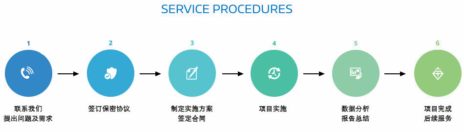

分子动力学（Molecular Dynamics, MD）模拟是一套分子模拟方法，该方法主要是依靠牛顿力学来模拟分子体系的不用状态构成的系统中抽取样本，从而计算体系的构型积分，并以构型积分的结果为基础进一步计算体系的热力学量和其他宏观性质。
分子动力学模拟能够有效运用于：
1、大分子与小分子相互作用，如：预测药物分子与蛋白/DNA的相互作用，材料吸附等;
2、大分子之间的相互作用（蛋白-蛋白相互作用）;
3、分子（药物、蛋白、材料分子）三维结构的优化，如优化同源模建的结构;
4、结构与功能、性质的关系。

根据项目不同，需要时间大概在20-50天。
需要先对项目进行评估，如果具有可实施性，价格范围2w-5w。
© 2016普瑞赛思生物医药科技（北京）有限公司 京ICP备16026270号